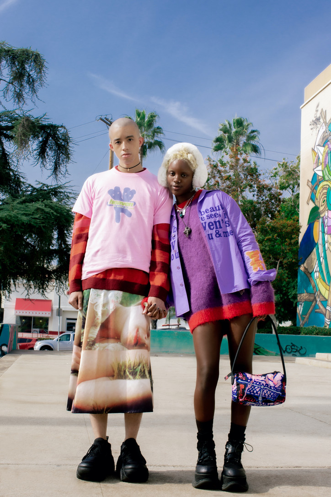
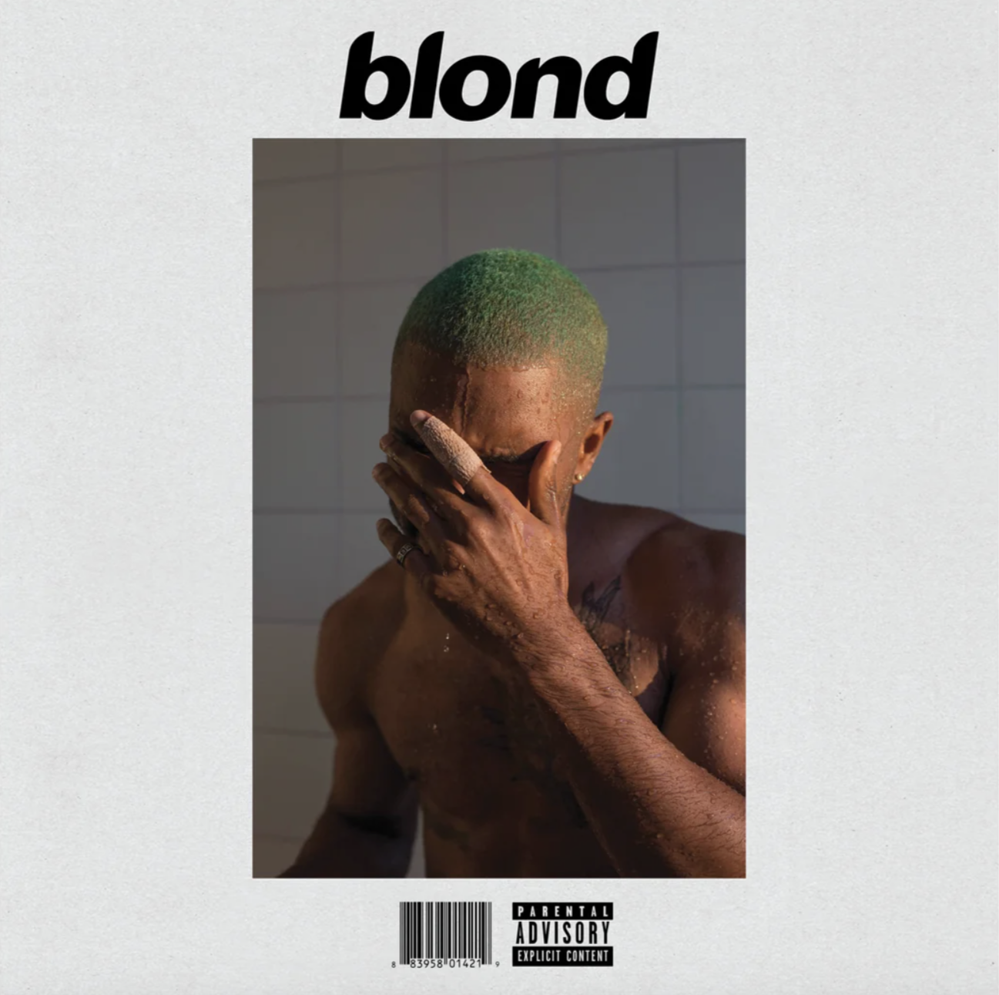
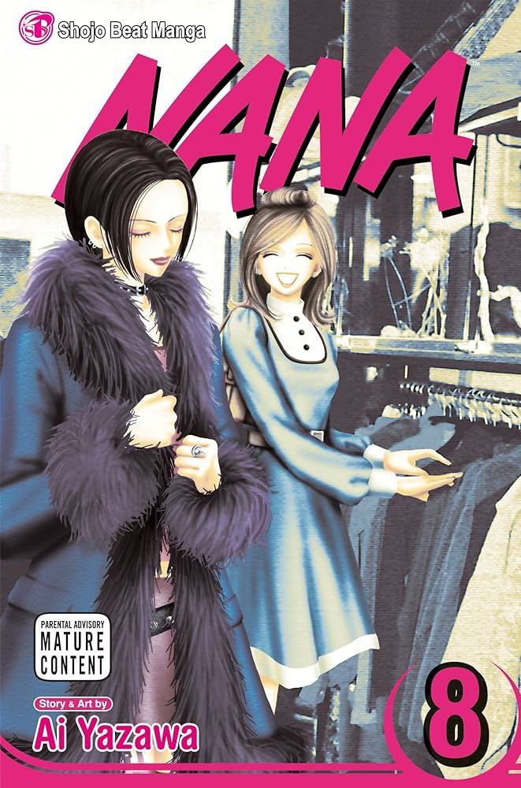

marc jacobs is an american fashion designer. i specifically like his "heaven" line, which is targeted toward gen z cutomers and inspired by 90s subcultures and teenage fashion. i especially like the way he is able to blend themes of grunge and nostalgia seamlessly. i hope to take inspiration from the designs from "heaven" in my future work.
frank ocean is an american singer, who is widely considered to be a pioneer of the alternative r&b genre. he's one of my favorite artists of all time and his album, "Blonde,"" is my favorite album of all time. his music also invokes a feeling of nostalgia in me, and i listen to it very often. my favorite song of his is "Nikes."
ai yazawa is the author of "nana," a japanese manga series. this manga takes a lot of inspiration from subcultures such as punk fashion and alternative culture. unfortunately the manga went unfinished due to her health issues, but i really enjoyed the story of the two main characters, nana osaki and nana komatsu, as they navigated their early 20s and friendship.
